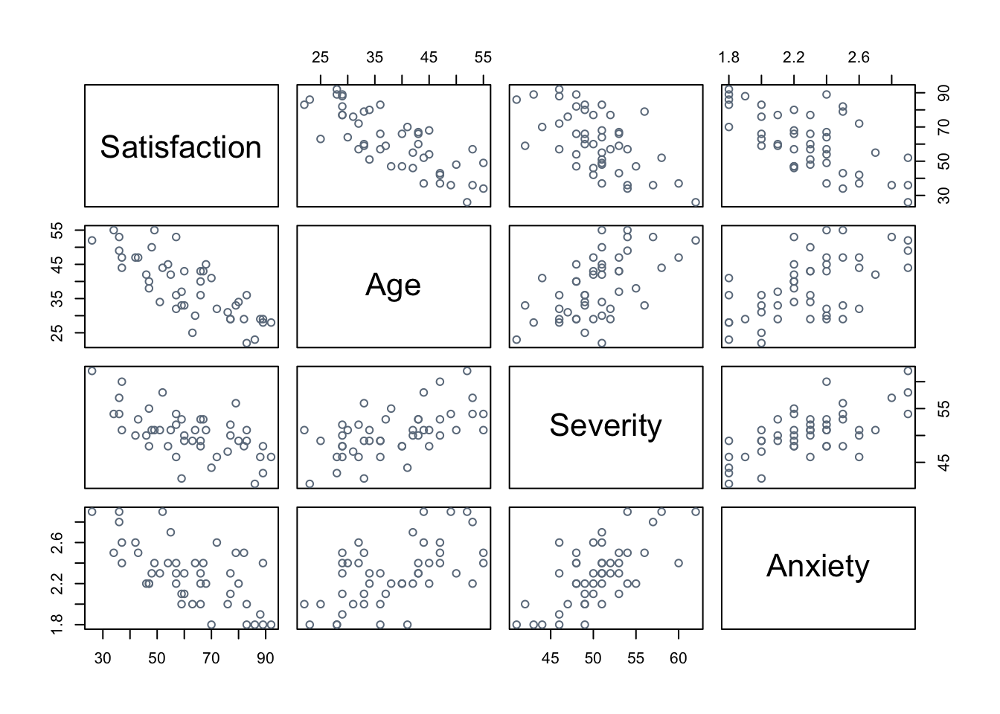
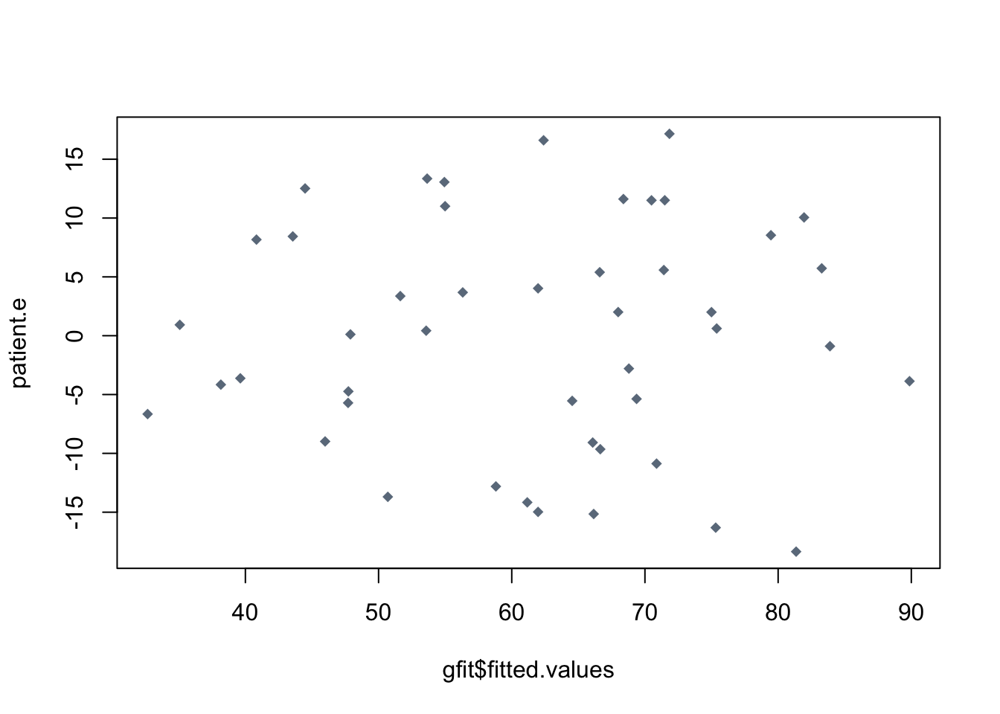
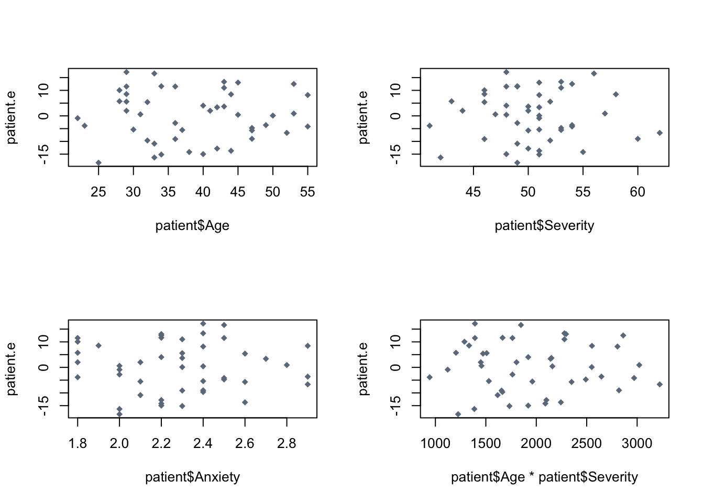
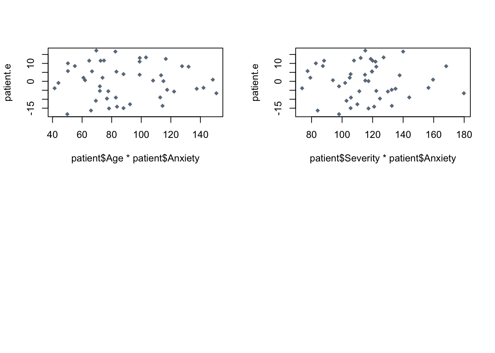

# read data
patient <- read.table("../../data/CH06PR15.txt", header=TRUE)
# scatter plot matrix
pairs(patient, col="slategray4")
# correlation matrix
cor(patient) Satisfaction Age Severity Anxiety
Satisfaction 1.0000000 -0.7867555 -0.6029417 -0.6445910
Age -0.7867555 1.0000000 0.5679505 0.5696775
Severity -0.6029417 0.5679505 1.0000000 0.6705287
Anxiety -0.6445910 0.5696775 0.6705287 1.0000000# fit linear model
gfit <- lm(Satisfaction ~ Age + Severity + Anxiety, data=patient)
# plot residuals against fitted values
patient.e <- resid(gfit)
plot(gfit$fitted.values, patient.e, col="slategray4", pch=18)
# plot against single variables
par(mfrow=c(2,2))
plot(patient$Age, patient.e, col="slategray4", pch=18)
plot(patient$Severity, patient.e, col="slategray4", pch=18)
plot(patient$Anxiety, patient.e, col="slategray4", pch=18)
# plot against interaction variables
plot(patient$Age*patient$Severity, patient.e, col="slategray4", pch=18)
plot(patient$Age*patient$Anxiety, patient.e, col="slategray4", pch=18)
plot(patient$Severity*patient$Anxiety, patient.e, col="slategray4", pch=18)
# f test for not all coefficients = 0
summary(gfit)
Call:
lm(formula = Satisfaction ~ Age + Severity + Anxiety, data = patient)
Residuals:
Min 1Q Median 3Q Max
-18.3524 -6.4230 0.5196 8.3715 17.1601
Coefficients:
Estimate Std. Error t value Pr(>|t|)
(Intercept) 158.4913 18.1259 8.744 5.26e-11 ***
Age -1.1416 0.2148 -5.315 3.81e-06 ***
Severity -0.4420 0.4920 -0.898 0.3741
Anxiety -13.4702 7.0997 -1.897 0.0647 .
---
Signif. codes: 0 '***' 0.001 '**' 0.01 '*' 0.05 '.' 0.1 ' ' 1
Residual standard error: 10.06 on 42 degrees of freedom
Multiple R-squared: 0.6822, Adjusted R-squared: 0.6595
F-statistic: 30.05 on 3 and 42 DF, p-value: 1.542e-10anova(gfit)Analysis of Variance Table
Response: Satisfaction
Df Sum Sq Mean Sq F value Pr(>F)
Age 1 8275.4 8275.4 81.8026 2.059e-11 ***
Severity 1 480.9 480.9 4.7539 0.03489 *
Anxiety 1 364.2 364.2 3.5997 0.06468 .
Residuals 42 4248.8 101.2
---
Signif. codes: 0 '***' 0.001 '**' 0.01 '*' 0.05 '.' 0.1 ' ' 1MSR <- (8275.4+480.9+364.2)/3
MSE <- 4248.8/42
F_stat <- MSR/MSE #f stat
compare <- qf(.90, 3, 42) #f*
# coefficient of multiple determination
SSR <- MSR*3
SSTO <- SSR+ (MSE*42)
R2 <- SSR/SSTO
# estimate mean Y
ci <- predict(gfit, newdata=data.frame(Age=35, Severity=45, Anxiety=2.2), interval="confidence", level=.90)
# predict Y
pi <- predict(gfit, newdata=data.frame(Age=35, Severity=45, Anxiety=2.2), interval="prediction", level=.90)
# f test for b3 not = 0
anova(gfit)Analysis of Variance Table
Response: Satisfaction
Df Sum Sq Mean Sq F value Pr(>F)
Age 1 8275.4 8275.4 81.8026 2.059e-11 ***
Severity 1 480.9 480.9 4.7539 0.03489 *
Anxiety 1 364.2 364.2 3.5997 0.06468 .
Residuals 42 4248.8 101.2
---
Signif. codes: 0 '***' 0.001 '**' 0.01 '*' 0.05 '.' 0.1 ' ' 1f_stat_x3 <- (364.2/101.2)
f4 <- qf(.975, 1, 42)
# f test for b2 and b3 not = 0
msr_2and3 <- (480.9+364.2)/2
f_star_2and3 <- msr_2and3/101.2